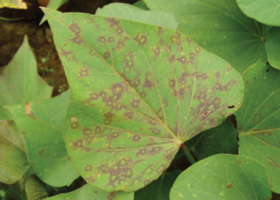
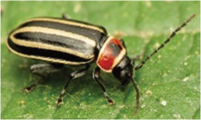
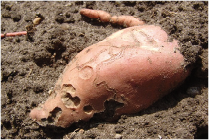

Agriculture for Secondary Schools
Figure 4.6 (b) sweet potato affected
Figure 4.6: (a) Adult flea beetle
with a larva of flea beetle
Sources:
https://extension.usu.edu/vegetableguide/
Sources: https://www.ipmimages.org/
potato/flea-beetles
browse/detail.cfm?imgnum=5605714
Viral diseases
Sweet potatoes are affected by viral diseases such as Sweet potato mild mottle
virus (SPMMV) (Figure 4.7 (a)) and Sweet potato feathery mottle virus (SPFMV)
(Figure 4.7 (b). These diseases are mainly transmitted from infected to uninfected
plants through vectors and planting materials.
Figure 4.7 (a): Sweet potato mild
Figure 4.7 (b): Sweet potato feathery
mottle virus symptoms
mottle virus symptoms
on leaves
on leaves
Source: https://www.cabidigitallibrary.org/doi/abs/10.1079/cabicompendium.51028
65
Student’s Book Form Two